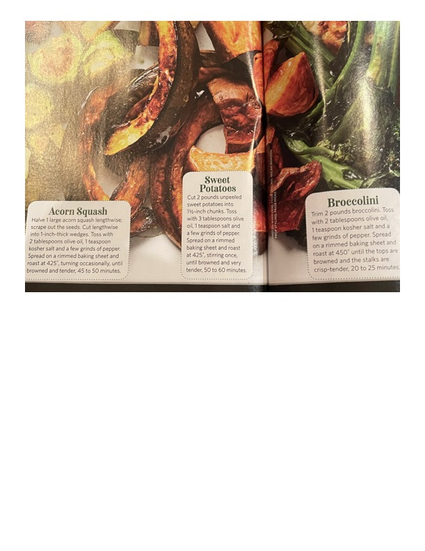

Roasted Acorn Squash, Sweet Potatoes & Broccolini

Original cookbook page 252
Three simple roasted vegetable recipes - caramelized acorn squash wedges, tender roasted sweet potatoes, and crisp-tender broccolini.
Prep: 15 minutes • Cook: 20-60 minutes • Total: 75 minutes
Ingredients
- FOR ROASTED ACORN SQUASH:
- 1 large acorn squash
- 2 tablespoons olive oil
- 1 teaspoon kosher salt
- A few grinds of pepper
- FOR ROASTED SWEET POTATOES:
- 2 pounds unpeeled sweet potatoes
- 3 tablespoons olive oil
- 1 teaspoon salt
- A few grinds of pepper
- FOR ROASTED BROCCOLINI:
- 2 pounds broccolini
- 2 tablespoons olive oil
- 1 teaspoon kosher salt
- A few grinds of pepper
Instructions
- FOR ACORN SQUASH: Halve 1 large acorn squash lengthwise; scrape out the seeds. Cut lengthwise into 1-inch-thick wedges. Toss with 2 tablespoons olive oil, 1 teaspoon kosher salt and a few grinds of pepper. Spread on a rimmed baking sheet and roast at 425°F, turning occasionally, until browned and tender, 45 to 50 minutes.
- FOR SWEET POTATOES: Cut 2 pounds unpeeled sweet potatoes into 1½-inch chunks. Toss with 3 tablespoons olive oil, 1 teaspoon salt and a few grinds of pepper. Spread on a rimmed baking sheet and roast at 425°F, stirring once, until browning and very tender, 50 to 60 minutes.
- FOR BROCCOLINI: Trim 2 pounds broccolini. Toss with 2 tablespoons olive oil, 1 teaspoon kosher salt and a few grinds of pepper. Spread on a rimmed baking sheet and roast at 450°F until the tops are browned and the stalks are crisp-tender, 20 to 25 minutes.
📝 Recipe Notes
Part of a roasted vegetables reference guide. Different timing for each: Broccolini 20-25 min at 450°F, Acorn squash 45-50 min at 425°F, Sweet potatoes 50-60 min at 425°F.
Recipe #252 from collection